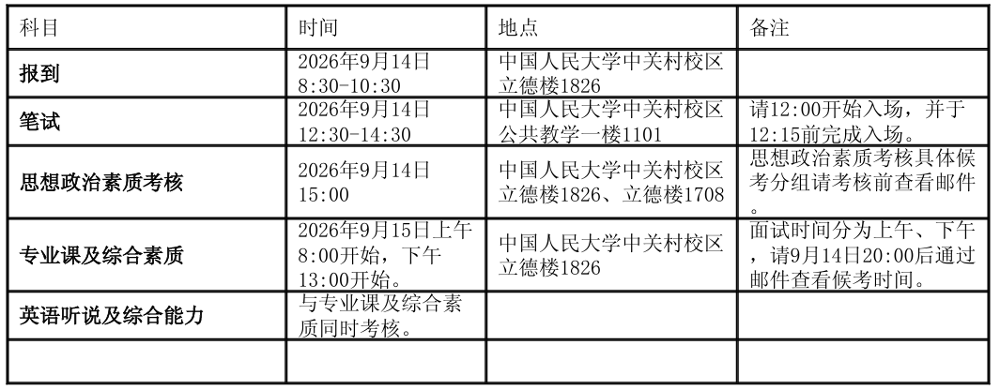
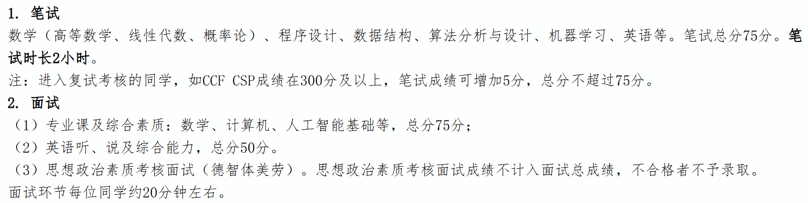

FIELD NOTE / 2026
中国人民大学高瓴人工智能学院
工程博士预推免
数学、算法与机器学习基础考查较广；还包含思政和英语。
笔试约 2 小时笔试满分 75 分面试约 20 分钟
01 / 整体流程与考核构成
- 我参加的是工程博士预推免。按我当时了解到的情况，工程硕博以及普通硕博的整体考核框架比较接近，但不同项目和年份的细节可能会调整，具体仍应以当年学院通知为准。
- 考核主要分为笔试、思想政治素质考核、专业课及综合素质面试、英语听说及综合能力考核几个部分。9 月 14 日上午报到，12:30—14:30 进行笔试，15:00 进行思想政治素质考核；9 月 15 日进行专业面试和英语考核。
- 官方说明中，笔试满分 75 分、时长 2 小时，覆盖数学、程序设计、数据结构、算法分析与设计、机器学习和英语等内容；CCF CSP 成绩达到 300 分及以上可在笔试成绩中加 5 分，但总分不超过 75 分。专业课及综合素质考核满分 75 分，英语听说及综合能力满分 50 分；思想政治素质考核不计入面试总成绩，但不合格者不予录取。面试环节每人约 20 分钟。


02 / 笔试内容与难度
- 按我的记忆，笔试前半部分主要是选择题：大约 15 道算法题，每题 2 分；10 道数学题，每题 1 分；5 道机器学习题，每题 2 分。后面还有一道 20 分的大题和一道约 5 分的中译英，因此总分为 75 分。具体题量以当年试卷为准。
- 选择题整体难度不低。数学部分会涉及高等数学、线性代数和概率论；算法与计算机基础部分的体感接近考研数学或 408 的部分题目，有些题甚至会更难一些。机器学习题偏数学推导和原理理解，也不是只考概念记忆。
- 20 分的大题是二选一，两道题采用相近的大模型背景：数学方向偏概率论，算法方向偏操作系统中的页面调度 / 页面置换算法，可以根据自己的优势选择其中一道作答。最后还有一道中译英，内容与 RSI、模型自我进化相关。
03 / 思想政治素质考核
- 思想政治素质考核不计入总成绩，整体氛围比较轻松，更像围绕个人情况、人际关系和价值判断进行聊天式交流。正常、稳妥地回答即可；官方要求是思想政治素质和品德考核不合格者不予录取。
- 我之前记录的正式思政面试问题包括：与宿舍舍友相处情况；如果实习安排与党员活动冲突会如何选择；如果想在校外租房但暂时找不到合适房源会怎么处理；科研过程中遇到的最大困难；是否和学长、老师出现过意见分歧，以及如何处理。
04 / 专业面试与实际体验
- 正式面试整体比较硬核，单人时长约 20 分钟。进入考场后会先抽题，再依次进行英语、综合素质 / 科研经历、算法和数学等方面的问答，问题覆盖面比较广。
- 我抽到的综合题要求先做自我介绍，并说明科研过程中遇到的最大困难以及自己是如何解决的。英语部分老师一开始问了一个问题，我当时没有听懂，之后换成了“Please introduce your favorite scientist.”。这个问题我准备得不充分，只能临场组织语言，整体回答得比较一般。
- 算法题是：给定一个整数数组和整数 target，统计和等于 target 的连续子数组数量，并说明算法思路和时间复杂度。我一开始没有想到更好的方法，思考了一段时间后只讲出了暴力解法；老师还没来得及继续追问时间复杂度，时间就到了下一题。
- 数学题考了向量范数：L1 范数、L2 范数、L∞ 范数分别如何定义，以及不同范数之间的大小关系。我前面的定义基本都答出来了，最后的大小关系没有来得及完整思考。整体面完以后，我自己感觉发挥并不好。
05 / 正式面试问题整理
- 综合素质 / 科研经历：请进行自我介绍，并说明科研过程中遇到的最大困难是什么、你是如何解决的。
- 英语：Please introduce your favorite scientist.
- 算法：给定一个整数数组和一个整数 target，统计数组中元素之和等于 target 的连续子数组数量；说明算法思路，并分析时间复杂度。
- 数学：请介绍向量范数的定义，以及 L1 范数、L2 范数、L∞ 范数；不同向量范数之间的大小关系是什么。
06 / 最终结果、候补与后续流程
- 我参加的工程博士方向最终大约招 23 人，我的结果是候补第 16 名。面试结束后我原本觉得希望不大，但后面候补继续顺延，最后确实顺延到了我。
- 据我当时了解，进入这轮考核的人大约接近 100 人，整体可以粗略理解为约 4:1 的竞争强度。不过不同类型项目、不同年份的入围人数和名额都会变化，这里只作为当年个人观察。
- 候补顺延后，如果继续走工程博士项目，后面还需要参加导师面试和企业面试，而且这两个环节都比较正式，企业端也存在继续筛选。
- 当时我已经拿到了浙江大学软件学院的优营，并且导师和后续安排都相对明确，因此没有继续参加人大后续的导师和企业面试，最终婉拒了这个候补机会。